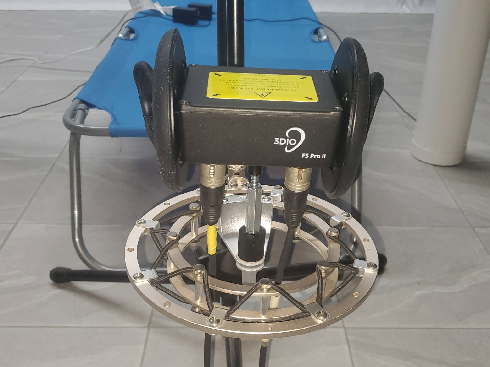

🎧
Immersion
Créer une sensation de proximité et de mouvement autour de la tête, particulièrement convaincante avec de bons écouteurs.
Le 3Dio FS Pro II permet de capter le son comme s'il était entendu depuis la position d'une tête humaine. Avec des écouteurs, les mouvements, la distance et la direction des instruments deviennent beaucoup plus présents et enveloppants.

Le microphone possède une capsule dans chaque oreille artificielle. La forme des oreilles modifie naturellement le son avant qu'il atteigne les capsules, un peu comme le font nos propres oreilles. Les canaux gauche et droit enregistrent donc de petites différences de temps, de niveau et de timbre.
À l'écoute au casque, le cerveau utilise ces différences pour replacer les sons autour de lui. Un bol joué à gauche, un gong qui s'éloigne ou un instrument déplacé derrière le micro peut ainsi créer une impression d'espace beaucoup plus réaliste qu'un enregistrement stéréo ordinaire.
Créer une sensation de proximité et de mouvement autour de la tête, particulièrement convaincante avec de bons écouteurs.
Capturer le frottement, l'attaque, le souffle, le sustain et les harmoniques des bols, gongs et bâtons.
Préserver les différences gauche-droite pour enrichir l'expérience, les comparaisons et les analyses sonores.
CymatiqueLab prépare des expériences binaurales que les personnes pourront vivre à la maison avec des écouteurs : voyages sonores guidés, séances courtes de recentrage, ambiances pour se déposer et contenus exploratoires autour du sommeil ou de la concentration.
“Fermez les yeux. Le son peut sembler se déplacer autour de vous.”
Des extraits réels avec bols et gongs seront bientôt intégrés à cette page.